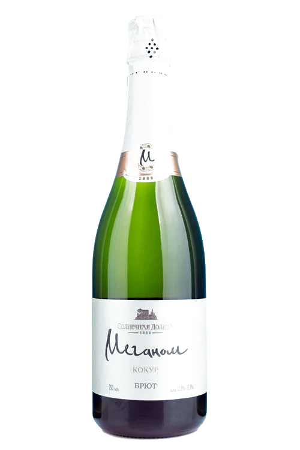

МЕГАНОМ КОКУР · КОКУР БЕЛЫЙ · СОЛНЕЧНАЯ ДОЛИНА
Меганом Кокур
Игристое выражение самого известного крымского белого автохтона — уже интересно

Досье
Раздел I · Досье
Что в бутылке
Игристое выражение самого известного крымского белого автохтона — уже интересно. А если добавить к этому классический метод производства и уникальность терруара «Солнечной Долины» — вино становится совершенно уникальным! Оно несомненно является отличным аперитивом, но и в гастрономическом плане обладает массой достоинств.
- Сортовой состав
- Кокур белый
- Спирт
- 11–13% об.
- Сахар
- не более 6 г/дм³
- Объём
- 0,75 л.
- Подача
- Рекомендуется подавать охлажденным до 7–10 °С
Дегустационная нота
- Цвет
- Светло-золотистый. Устойчивый, мелкий «бисерный» перляж
- Букет
- Довольно сложный аромат с преобладающими оттенками свежих фруктов, леденцово-карамельнымии и цитрусовыми оттенками, а также минеральными нюансами
- Вкус
- Яркий вкус с тонами южных фруктов. В балансе акцентировано внимание на свежую кислотность. Послевкусие вина длительное, развивающееся из фруктовой мягкости в свежесть
- Гастрономия
- Это игристое вино, прежде всего, является замечательным аперитивом. При подборе правильных гастрономических сочетаний стоит обратить внимание на фруктовые блюда и закуски, а также на морепродукты и не сладукю выпечку. Уверены, что его сочетание с молодыми сырами тоже вам понравится
Раздел II · Тот же сорт в долине
Соседи по лозе
Другие вина дома, где встречается кокур белый.
- Меганом Кокур Игристые выдержанные вина 11–13% об. · не более 6 г/дм³ Эта карточка
- Кокур Сухие вина 13% об. · 4 г/дм³ Открыть карточку
- Мадера Крымская Коллекция 18,5% об. · 40 г/дм³ Открыть карточку
- Солнечная Долина Коллекция 16% об. · 160 г/дм³ Открыть карточку
- Золотая Фортуна Архадерессе Коллекция 17,5% об. · 100 г/дм³ Открыть карточку
- Портвейн Белый Крымский Коллекция 17,5% об. · 95 г/дм³ Открыть карточку
- Портвейн Белый Крымский Коллекция 17,5% об. · 95 г/дм³ Открыть карточку
Раздел III · Визит
Это вино наливают в подвале.
Экскурсия по трём голицынским подвалам и дегустация 10 марок вин — 1 час 20 минут, от 1 450 ₽ за гостя. Начало в 10:00, 11:00, 13:00, 14:00, 15:00, 16:00 ежедневно; в 20:00 — дегустация при свечах по предварительной заявке.
с 10:00 до 17:00 без выходных · с. Миндальное, ул. Миндальная, 8А, дегустационный зал «Архадерессе»